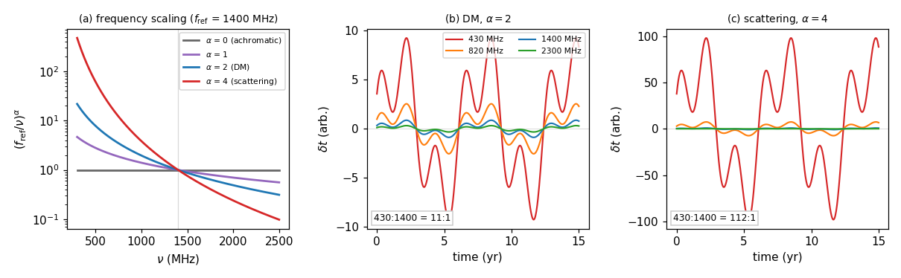
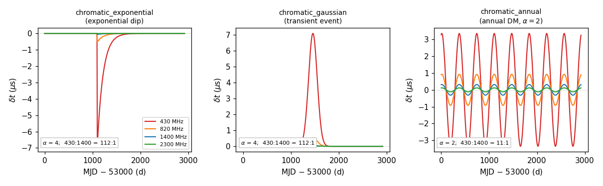
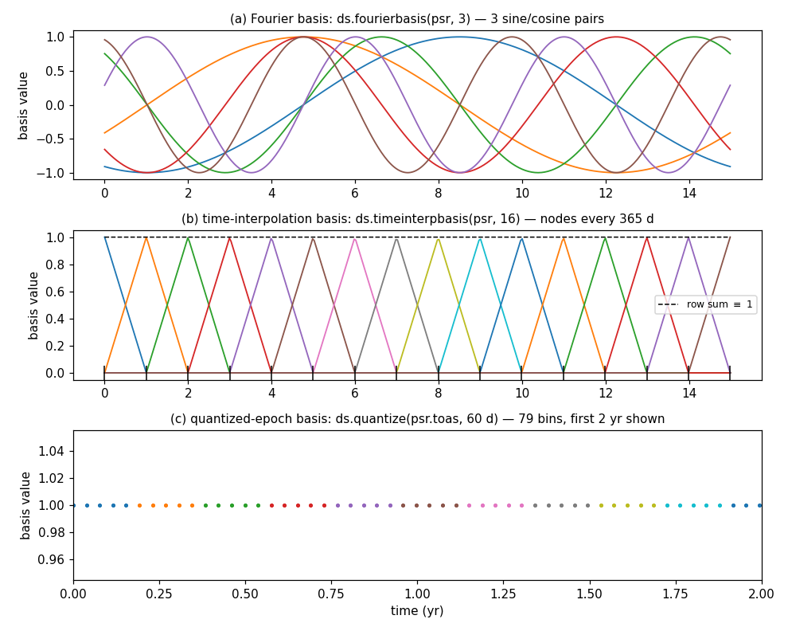
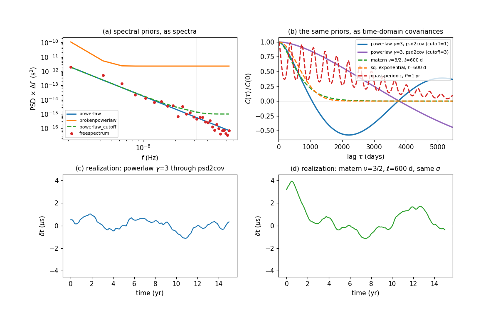

Chromatic noise analyses#
A chromatic signal is any contribution to the timing residuals whose delay depends on the observing radio frequency \(\nu\). A variety of methods exist for modeling them, but the documentation here touches on some of the more widely used methods in the likelihood.:
DM noise — stochastic dispersion-measure variations, \(\alpha = 2\).
Solar wind — dispersion by the solar wind, also \(\alpha = 2\), but modulated by a strongly time-dependent geometry factor.
Free chromatic noise — a stochastic process with the chromatic index \(\alpha\) left as a free parameter, usually to capture scattering (\(\alpha \approx 4\)).
Deterministic chromatic events — parametric, often transient features such as exponential dips, transient Gaussian events, and annual variations.
This page explains what each of these actually infers, gives example code for including each one, sets out the different ways of modelling them (Fourier basis, FFT-covariance, time-domain kernels, deterministic delays), and describes the fixed chromatic parameter analysis in which a noise dictionary turns a variable GP into a cached, constant GP.
For the general Gaussian-process machinery that all of these share, see Noise and Signal Components; for the spectral priors, see GP Priors and Spectra; for deterministic delays in general, see Deterministic Delays.
What is actually being inferred#
Every chromatic signal in discovery factorizes into a quantity that varies in time and a scaling that depends only on radio frequency:
For the Gaussian-process signals, \(x(t)\) is expanded on a basis and it is the coefficients of that basis that are given a prior:
where the design matrix \(F\) already contains the \((f_\mathrm{ref}/\nu)^\alpha\) factor. Everything on this page is a choice about three things: what \(\alpha\) is, what the columns of \(F\) are, and what \(\Phi\) looks like (covariance/prior/psd).
Signal |
\(\alpha\) |
What \(x(t)\) is |
Units of the coefficients |
|---|---|---|---|
DM noise |
2, fixed |
DM variations |
seconds of delay at \(f_\mathrm{ref}\) |
Solar wind |
2, fixed |
solar wind electron density at 1 AU |
\(\mathrm{cm}^{-3}\) (a density, not a delay) |
Free chromatic |
free |
scattering / unmodelled chromatic variations |
seconds of delay at \(f_\mathrm{ref}\) |
Deterministic events |
free or fixed |
a parametric shape in time |
seconds of delay at \(f_\mathrm{ref}\) |
The default reference frequency throughout is fref = 1400.0 MHz, so all amplitudes
are quoted as the delay the signal would produce at 1400 MHz.
The chromatic index is what separates these signals from one another, and the separation is only as good as the frequency coverage of the data.
import matplotlib.pyplot as plt
import numpy as np
# A time series x(t), rendered as a delay in four bands under two chromatic indices.
tt = np.linspace(0, 15, 500)
x = 0.6 * np.sin(2 * np.pi * tt / 6.3) + 0.4 * np.sin(2 * np.pi * tt / 2.1 + 1.0)
fig, axes = plt.subplots(1, 3, figsize=(11, 3.4))
nu = np.linspace(300, 2500, 400)
for a, c, lbl in [(0., '0.4', ' (achromatic)'), (1., 'C4', ''),
(2., 'C0', ' (DM)'), (4., 'C3', ' (scattering)')]:
axes[0].plot(nu, (1400. / nu)**a, color=c, lw=1.8, label=fr'$\alpha$ = {a:g}' + lbl)
axes[0].axvline(1400, color='0.85', lw=0.8, zorder=0)
axes[0].set_xlabel(r'$\nu$ (MHz)')
axes[0].set_ylabel(r'$(f_\mathrm{ref}/\nu)^\alpha$')
axes[0].set_yscale('log')
axes[0].legend(fontsize=7)
axes[0].set_title(r'(a) frequency scaling ($f_\mathrm{ref}$ = 1400 MHz)', fontsize=9)
for ax, a, ttl in [(axes[1], 2.0, r'(b) DM, $\alpha = 2$'),
(axes[2], 4.0, r'(c) scattering, $\alpha = 4$')]:
for f, c in [(430, 'C3'), (820, 'C1'), (1400, 'C0'), (2300, 'C2')]:
ax.plot(tt, x * (1400. / f)**a, color=c, lw=1.4, label=f'{f} MHz')
ax.axhline(0, color='0.85', lw=0.6, zorder=0)
ax.set_xlabel('time (yr)')
ax.set_ylabel(r'$\delta t$ (arb.)')
ax.set_title(ttl, fontsize=9)
ax.text(0.03, 0.04, f'430:1400 = {(1400/430)**a:.0f}:1', transform=ax.transAxes,
fontsize=8, bbox=dict(fc='white', ec='0.8', pad=2))
axes[1].legend(fontsize=7, ncol=2, loc='upper right')
fig.tight_layout()

Panel (a) is the whole difficulty in one plot. Over a 430–2300 MHz span the \(\alpha = 2\) and \(\alpha = 4\) curves differ by a factor of ten. With narrow-band data near 1400 MHz, all the curves converge, DM and scattering and solar wind become nearly degenerate with one another, and the posterior on \(\alpha\) is driven by the prior rather than the likelihood. The solar wind is partly rescued from this by its geometry factor, which imposes a distinctive annual time structure that neither DM nor scattering noise has.
Dispersion measure (DM) noise#
Cold-plasma dispersion delays the arrival of a pulse by \(\propto \mathrm{DM}/\nu^2\),
so DM noise is the \(\alpha = 2\) case, with \(\alpha\) held fixed rather than
fitted. In discovery this is a choice of basis: fourierbasis_dm()
is exactly fourierbasis() with every row multiplied by
\((f_\mathrm{ref}/\nu)^2\).
import discovery as ds
# DM noise as a Fourier-basis GP with a power-law prior
dm_gp = ds.makegp_fourier(psr, ds.powerlaw, 100,
fourierbasis=ds.fourierbasis_dm,
name='dm_gp')
DM noise is conventionally given many more frequency components than achromatic red noise (100 is a common choice against 30) because DM variations have substantial power at high frequencies — they are not a steep red process.
Three variants are worth knowing:
# A different fixed index, or the tempo2/TempoNest DM normalisation
basis = ds.make_fourierbasis_dm(alpha=2.0, tndm=True)
dm_gp = ds.makegp_fourier(psr, ds.powerlaw, 100, fourierbasis=basis, name='dm_gp')
# The same prior, realised as a time-domain covariance instead (see below)
dm_gp = ds.makegp_fftcov_dm(psr, ds.powerlaw, 101, name='dm_gp')
# A time-domain GP with an explicit kernel over quantized epochs
dm_gp = ds.makegp_timedomain_dm(psr, ds.matern_kernel(), dt=15 * 86400, name='dm_gp')
The parameters created are {psr}_dm_gp_log10_A and {psr}_dm_gp_gamma for the
power-law cases, and the kernel’s own hyperparameters for the last one.
Note
Use the name dm_gp unless you have a reason not to.
priordict_standard matches parameters by regular expression,
and it knows about dm_gp, chrom_gp, sw_gp, rednoise, chrom_exp,
chrom_1yr and chrom_gauss. A GP named something else will build and evaluate
perfectly well but will raise KeyError from
sample_uniform() or
makelogprior_uniform() unless you supply your own priordict.
Solar wind#
The solar wind contributes a dispersive delay too, but with a decisive difference: the electron column density along the line of sight changes by orders of magnitude over the year as the line of sight sweeps past the Sun. Discovery follows the usual spherically-symmetric \(1/r^2\) model and splits the solar-wind DM into a density and a purely geometric factor,
where \(n_E\) is the electron density referenced to 1 AU in \(\mathrm{cm}^{-3}\),
\(G(t)\) is computed by dm_solar() from the pulsar’s solar
elongation and the Earth–Sun distance, and \(K = 4.148808\times10^3\) is the
dispersion constant.
The simplest model holds the density constant and fits one number:
# Deterministic solar wind: a single electron density n_earth at 1 AU
sw_delay = ds.makedelay(psr, ds.make_solardm(psr), name='solar')
# -> parameter {psr}_solar_n_earth, in cm^-3
To let the density vary, put a GP on it. fourierbasis_solar_dm()
builds a Fourier basis whose rows are scaled by \(G(t)\,K/\nu^2\), so — importantly —
the GP coefficients are a density, not a delay:
sw_gp = ds.makegp_fourier(psr, ds.powerlaw, 30,
fourierbasis=ds.fourierbasis_solar_dm,
name='sw_gp')
# or in the time domain, with an explicit kernel over quantized epochs
sw_gp = ds.makegp_timedomain_solar_dm(psr, ds.matern_kernel(),
dt=15 * 86400, name='sw_gp')
This is why priordict_standard gives sw_gp_log10_A the range
\([-10, -2]\) while red noise gets \([-20, -11]\): the amplitude is in
\(\mathrm{cm}^{-3}\), and physically sensible values are of order unity, comparable
to n_earth itself. Feeding a solar wind GP a red-noise prior range is a common and
silent mistake.
Two consequences follow from the geometry factor. Because \(G(t)\) is sharply peaked
at solar conjunction, the solar wind GP is informed almost entirely by TOAs taken near
conjunction and at low frequency; and because the delay is the product of a smooth
density with an annually cusped geometry, its time structure is not stationary, which is
exactly what a stationary power law in a Fourier basis reproduces least well. That is the
main argument for the time-domain treatment. PINT’s TimeDomainSWNoise
component works through the same geometry in detail, and its documentation carries
figures of the annual cusp.
Free chromatic noise#
When the chromatic index is not known — scattering gives \(\alpha \approx 4\), but
the effective index of unmodelled chromatic structure need not be any particular value —
fourierbasis_chrom() leaves it free. This changes the type of
the design matrix: instead of an array it returns a callable fmatfunc(alpha), and
makegp_fourier() detects that and builds a GP whose basis is
rebuilt at every likelihood evaluation.
chrom_gp = ds.makegp_fourier(psr, ds.powerlaw, 100,
fourierbasis=ds.fourierbasis_chrom,
name='chrom_gp')
# -> {psr}_chrom_gp_log10_A, {psr}_chrom_gp_gamma, {psr}_chrom_gp_alpha
# the FFT-covariance (time-domain) counterpart
chrom_gp = ds.makegp_fftcov_chrom(psr, ds.powerlaw, 101, name='chrom_gp')
If instead you want a fixed non-DM index, use
make_fourierbasis_chrom(), which is
make_fourierbasis_dm() with a default alpha=4:
chrom_gp = ds.makegp_fourier(psr, ds.powerlaw, 100,
fourierbasis=ds.make_fourierbasis_chrom(alpha=4.0),
name='chrom_gp')
The standard prior range for chrom_gp_alpha is \([2.5, 14]\) — deliberately
excluding 2, so that the free chromatic process cannot simply collapse onto the DM GP.
Low-frequency chromatic structure#
A Fourier basis over the data span cannot represent a chromatic trend that is constant,
linear, or quadratic in time — those are precisely the modes the basis lacks, and in the
\(\alpha = 2\) case they are already in the timing model as DM, DM1, DM2.
For a free index there is no such timing-model equivalent, so discovery provides the
missing quadratic as a GP with an improper (flat) prior, via
makegp_improper_varF():
# A chromatic quadratic [1, t, t^2] * (fref/freq)^alpha, analytically marginalised
chrom_quad = ds.makegp_improper_varF(psr, ds.chromatic_quad_basis(psr),
name='chrom_gp', param_names=['alpha'])
makegp_improper_varF() exists for exactly this situation: a GP
whose design matrix depends on a fit parameter while its prior does not. It takes a
callable basis fmat(*param_values), reads the column count from the basis’s ncol
attribute (evaluating it once if absent), and gives the coefficients a flat diagonal prior
constant = 1e40 — improper, so the coefficients are marginalised without informative
shrinkage, and only the basis carries parameters.
The important detail is the name. Because
makegp_improper_varF() names its parameters
{psr}_{name}_{param}, giving the quadratic the same name as the chromatic
Fourier GP makes both signals depend on one shared {psr}_chrom_gp_alpha parameter — a
single chromatic index for the whole chromatic model, rather than one per component.
Giving them different names silently produces two independent indices.
makegp_chrom_poly_svd() is a more careful variant of the same
idea: it SVD-orthonormalises the polynomial basis and projects the timing-model column
subspace out of it at runtime, removing the degeneracy with
makegp_timing().
chrom_quad = ds.makegp_chrom_poly_svd(psr, name='chrom_gp')
Deterministic chromatic events#
Some chromatic features are not stochastic at all: a sudden dip lasting months, a transient event, an annual modulation. Modelling these as parametric delays rather than absorbing them into a GP keeps the GP’s stationary prior honest and gives directly interpretable parameters — an epoch, an amplitude, a timescale.
Discovery provides three, all in discovery.deterministic, all with a free
chromatic index, and all attached with makedelay():
Factory |
Standard |
Parameters |
|---|---|---|
|
|
|
|
|
|
|
|
from discovery import deterministic as det
# An exponential dip: sharp onset at t0, exponential recovery over tau
dip = ds.makedelay(psr, det.chromatic_exponential(psr), name='chrom_exp')
# A transient Gaussian event
event = ds.makedelay(psr, det.chromatic_gaussian(psr), name='chrom_gauss')
# An annual chromatic variation
annual = ds.makedelay(psr, det.chromatic_annual(psr), name='chrom_1yr')
t0 is in MJD and log10_tau / log10_sigma in days, while log10_Amp is the
log amplitude in seconds at fref. sign_param carries only its sign, so a prior of
\([-1, 1]\) lets the sampler choose between a dip and a bump.
import matplotlib.pyplot as plt
import numpy as np
from discovery import deterministic as det
class FakePulsar: # the delay factories need only .toas and .freqs
name = 'J1234+5678'
def __init__(self, span_yr=8.0, cadence_d=7.0):
bands = np.array([430.0, 820.0, 1400.0, 2300.0])
ep = np.arange(0.0, span_yr * 365.25, cadence_d)
self.toas = (53000.0 + np.repeat(ep, len(bands))) * 86400.0
self.freqs = np.tile(bands, len(ep))
psr = FakePulsar()
t_mjd = psr.toas / 86400.0
specs = [
(det.chromatic_exponential(psr),
dict(t0=53000 + 3 * 365.25, log10_Amp=-7.2, log10_tau=np.log10(120.),
sign_param=-1.0, alpha=4.0),
'chromatic_exponential\n(exponential dip)'),
(det.chromatic_gaussian(psr),
dict(t0=53000 + 4 * 365.25, log10_Amp=-7.2, log10_sigma=np.log10(90.),
sign_param=1.0, alpha=4.0),
'chromatic_gaussian\n(transient event)'),
(det.chromatic_annual(psr),
dict(log10_Amp=-6.5, phase=0.7, alpha=2.0),
'chromatic_annual\n(annual DM, $\\alpha=2$)'),
]
fig, axes = plt.subplots(1, 3, figsize=(11, 3.4))
for ax, (fn, kw, ttl) in zip(axes, specs):
d = np.asarray(fn(**kw)) * 1e6
for f, c in [(430, 'C3'), (820, 'C1'), (1400, 'C0'), (2300, 'C2')]:
m = psr.freqs == f
ax.plot(t_mjd[m] - 53000, d[m], color=c, lw=1.4, label=f'{f} MHz')
ax.axhline(0, color='0.85', lw=0.6, zorder=0)
ax.set_title(ttl, fontsize=9)
ax.set_xlabel('MJD $-$ 53000 (d)')
ax.set_ylabel(r'$\delta t$ ($\mu$s)')
a_ = kw['alpha']
ax.text(0.03, 0.06, fr'$\alpha$ = {a_:g}; 430:1400 = {(1400/430)**a_:.0f}:1',
transform=ax.transAxes, fontsize=7.5, bbox=dict(fc='white', ec='0.8', pad=2))
axes[0].legend(fontsize=7, loc='lower right')
fig.tight_layout()

Note the y-axis scales: at \(\alpha = 4\) the 1400 and 2300 MHz curves are nearly flat while the 430 MHz curve carries the event. A chromatic event is essentially a low-frequency phenomenon, and a dataset without low-frequency coverage during the event will not constrain it.
Choosing a basis#
Every GP on this page is \(F a\) with \(a \sim \mathcal{N}(0, \Phi)\). Discovery offers three families of basis, and the choice determines both what structure is easy to represent and whether \(\Phi\) is diagonal.
import matplotlib.pyplot as plt
import numpy as np
import discovery as ds
from discovery import signals
class FakePulsar: # the bases need only .toas, .freqs and .name
name = 'J1234+5678'
def __init__(self, span_yr=15.0, cadence_d=14.0):
bands = np.array([430.0, 820.0, 1400.0, 2300.0])
ep = np.arange(0.0, span_yr * 365.25, cadence_d)
self.toas = (53000.0 + np.repeat(ep, len(bands))) * 86400.0
self.freqs = np.tile(bands, len(ep))
psr = FakePulsar()
tp = (psr.toas - psr.toas.min()) / (365.25 * 86400)
o = np.argsort(tp)
fig, axes = plt.subplots(3, 1, figsize=(9, 7.2))
# (a) Fourier: global sines and cosines at k/T
f, df, F = signals.fourierbasis(psr, 3)
for j in range(6):
axes[0].plot(tp[o], np.asarray(F)[o, j], lw=1.2)
axes[0].set_title('(a) Fourier basis: ds.fourierbasis(psr, 3) — 3 sine/cosine pairs',
fontsize=10)
# (b) time interpolation: local hats anchored at evenly spaced nodes
t_coarse, dt_coarse, B = signals.timeinterpbasis(psr, 16)
for j in range(B.shape[1]):
axes[1].plot(tp[o], B[o, j], lw=1.2)
axes[1].plot((t_coarse - psr.toas.min()) / (365.25 * 86400),
np.zeros_like(t_coarse), 'k|', ms=12)
axes[1].plot(tp[o], B.sum(axis=1)[o], 'k--', lw=1.0, label=r'row sum $\equiv$ 1')
axes[1].set_title('(b) time-interpolation basis: ds.timeinterpbasis(psr, 16) — '
f'nodes every {dt_coarse / 86400:.0f} d', fontsize=10)
axes[1].legend(fontsize=8, loc='center right')
# (c) quantized epochs: one indicator column per time bin
bins = signals.quantize(psr.toas, 60 * 86400)
U = np.vstack([bins == i for i in range(bins.max() + 1)]).T.astype('d')
for j in range(U.shape[1]):
m = U[:, j] > 0
axes[2].plot(tp[m], U[m, j], '.', ms=4)
axes[2].set_xlim(0, 2.0)
axes[2].set_title('(c) quantized-epoch basis: ds.quantize(psr.toas, 60 d) — '
f'{U.shape[1]} bins, first 2 yr shown', fontsize=10)
axes[2].set_xlabel('time (yr)')
for ax in axes:
ax.set_ylabel('basis value')
fig.tight_layout()

Fourier |
Time interpolation |
Quantized epochs |
|
|---|---|---|---|
Built by |
|
|
|
Columns |
sines/cosines at \(k/T\) |
piecewise-linear hats at nodes |
indicators for time bins |
Support |
global |
local (one node spacing) |
local (one bin) |
\(\Phi\) |
diagonal — the PSD |
dense — a covariance matrix |
dense — a covariance matrix |
Resolution set by |
number of components |
number of nodes |
bin width |
Used by |
|
|
|
Naturally expresses |
scale-free power laws |
band-limited processes without periodicity |
finite correlation times, sharp features |
The Fourier basis is the default and is the right thing for a stationary power law. Its costs are the familiar ones: a lowest resolvable frequency \(1/T\), periodicity over the span, and the leakage and edge artifacts that come with them. The interpolation and quantized bases have local support and no periodicity, at the price of a dense \(\Phi\) that must be factored — a cost set by the number of nodes, not the number of TOAs.
Which factory to call, by signal and basis:
Signal |
Fourier |
FFT-covariance |
Time domain + kernel |
|---|---|---|---|
Achromatic |
|
|
— |
DM (\(\alpha=2\)) |
|
|
|
Free chromatic |
|
|
— |
Solar wind |
|
— |
|
Choosing a prior#
Fourier-basis priors (PSD)#
For Fourier-basis GPs, \(\Phi\) is diagonal and its entries are a power spectral
density evaluated at the basis frequencies. Any function with the signature
prior(f, df, ...) will work, so this list is not exhaustive.
Prior |
Parameters and use |
|---|---|
|
|
|
|
|
|
|
|
|
Combine an intrinsic per-pulsar spectrum with a common process on the same basis. |
It is straight forward to create your own PSD:
import jax.numpy as jnp
def powerlaw_flattail(f, df, log10_A, gamma, log10_floor):
"""A power law that flattens to a constant floor at high frequency."""
pl = 10**(2 * log10_A) / (12 * jnp.pi**2) * ds.fyr**(gamma - 3) * f**(-gamma) * df
return pl + 10**(2 * log10_floor) * df
dm_gp = ds.makegp_fourier(psr, powerlaw_flattail, 100,
fourierbasis=ds.fourierbasis, name='red_noise')
The parameter names are read off the function signature, so this GP acquires
{psr}_dm_gp_log10_A, {psr}_dm_gp_gamma and {psr}_dm_gp_log10_floor
automatically. Annotate an argument as typing.Sequence to make it a vector parameter,
as freespectrum() does.
Time-domain kernels#
For the makegp_timedomain_* GPs, \(\Phi\) is a dense covariance matrix built by
evaluating a kernel at the lags between nodes. Each kernel factory returns a closure
kernel(tau, ...) whose remaining arguments become the GP’s hyperparameters. Writing
\(\tau\) for the lag, \(\sigma = 10^{\texttt{log10\_sigma\_*}}\), and
\(\ell = 10^{\texttt{log10\_ell}}\) in days:
Kernel |
Hyperparameters |
\(K(\tau)\) |
|---|---|---|
|
\(\sigma^2 \delta_{ij}\) — uncorrelated between nodes |
|
|
\(\sigma^2 \exp(-\tau^2 / 2\ell^2)\) |
|
|
\(\sigma^2\,(1 + \sqrt{3}\tau/\ell)\,e^{-\sqrt{3}\tau/\ell}\) for \(\nu = 3/2\), and the usual forms for \(\nu = 1/2, 5/2\) |
|
|
\(\sigma^2 \exp\!\left(-\tau^2/2\ell^2 - \Gamma_p \sin^2(\pi\tau/P)\right)\) |
Note that nu is baked into the closure by
matern_kernel(), so it is a modelling choice rather than a
sampled parameter, and that log10_p is in years while log10_ell is in
days. All kernels but the ridge add a small diagonal regulariser
\((\sigma/50000)^2\) for numerical stability.
# The kernel factory's arguments are defaults; the closure's arguments are sampled
dm_gp = ds.makegp_timedomain_dm(psr, ds.matern_kernel(nu=1.5), dt=15 * 86400,
name='dm_gp')
# -> {psr}_dm_gp_log10_sigma_matern, {psr}_dm_gp_log10_ell
Spectra and kernels are two descriptions of the same object#
For a stationary process the Wiener–Khinchin theorem makes the kernel and the PSD a
Fourier pair, and psd2cov() is that transform: it takes a PSD
function, evaluates it on an oversampled frequency grid, inverse-FFTs it, and returns a
Toeplitz covariance matrix over lags. This is exactly how the makegp_fftcov* family
turns a power law into a time-domain GP — the node spacing of the interpolation basis and
the lag spacing of the covariance are both \(T/(N-1)\), so they line up by
construction.
import matplotlib.pyplot as plt
import numpy as np
import discovery as ds
from discovery import signals
class FakePulsar:
name = 'J1234+5678'
def __init__(self, span_yr=15.0, cadence_d=14.0):
bands = np.array([430.0, 820.0, 1400.0, 2300.0])
ep = np.arange(0.0, span_yr * 365.25, cadence_d)
self.toas = (53000.0 + np.repeat(ep, len(bands))) * 86400.0
self.freqs = np.tile(bands, len(ep))
psr = FakePulsar()
T = signals.getspan(psr)
ncomp = 121 # psd2cov requires an odd component count
fig = plt.figure(figsize=(11, 6.8))
gs = fig.add_gridspec(2, 2, hspace=0.34, wspace=0.24)
axp, axk = fig.add_subplot(gs[0, 0]), fig.add_subplot(gs[0, 1])
axr1, axr2 = fig.add_subplot(gs[1, 0]), fig.add_subplot(gs[1, 1])
# --- (a) the spectral priors, as spectra ---
fq, dfq = np.arange(1, 31) / T, 1 / T
for name, psd, kw, c in [
('powerlaw', ds.powerlaw, dict(log10_A=-13.5, gamma=3.0), 'C0'),
('brokenpowerlaw', ds.brokenpowerlaw,
dict(log10_A=-13.5, gamma=4.5, log10_fb=-8.3), 'C1'),
('powerlaw_cutoff', ds.powerlaw_cutoff,
dict(log10_A=-13.5, gamma=3.0, Nfreq_cutoff=8.), 'C2')]:
axp.loglog(fq, np.asarray(psd(fq, dfq, **kw)), color=c, lw=1.8,
ls='--' if name == 'powerlaw_cutoff' else '-', label=name)
rng = np.random.default_rng(11)
rho = 0.5 * np.log10(np.asarray(ds.powerlaw(fq, dfq, -13.5, 3.0))) + rng.normal(0, 0.12, len(fq))
axp.loglog(fq, np.asarray(ds.freespectrum(fq, dfq, rho))[::2], 'o', ms=3.5,
color='C3', label='freespectrum')
axp.axvline(1 / (365.25 * 86400), color='0.85', lw=0.8, zorder=0)
axp.set_xlabel('$f$ (Hz)')
axp.set_ylabel(r'PSD $\times\ \Delta f$ (s$^2$)')
axp.set_title('(a) spectral priors, as spectra', fontsize=10)
axp.legend(fontsize=7)
# --- (b) a power law and the kernels, both as covariances ---
lags = np.arange(ncomp) * T / (ncomp - 1) / 86400
C1 = np.asarray(signals.psd2cov(ds.powerlaw, ncomp, T)(0., 0., -13.5, 3.0))
C3 = np.asarray(signals.psd2cov(ds.powerlaw, ncomp, T, cutoff=3)(0., 0., -13.5, 3.0))
axk.plot(lags, C1[0] / C1[0, 0], color='C0', lw=2.0,
label=r'powerlaw $\gamma$=3, psd2cov (cutoff=1)')
axk.plot(lags, C3[0] / C3[0, 0], color='C4', lw=2.0,
label=r'powerlaw $\gamma$=3, psd2cov (cutoff=3)')
taufine = np.linspace(0, lags.max(), 400) * 86400
for kf, kw, lbl, c in [
(signals.matern_kernel, dict(log10_sigma_matern=-7., log10_ell=np.log10(600.)),
r'matern $\nu$=3/2, $\ell$=600 d', 'C2'),
(signals.square_exponential_kernel,
dict(log10_sigma_sq_exp=-7., log10_ell=np.log10(600.)),
r'sq. exponential, $\ell$=600 d', 'C1'),
(signals.quasi_periodic_kernel,
dict(log10_sigma_quasi_periodic=-7., log10_ell=np.log10(2500.),
log10_gamma_p=0., log10_p=0.),
r'quasi-periodic, $P$=1 yr', 'C3')]:
row = np.asarray(kf(**kw)(taufine))[0]
row = row - (row[0] - 10**(2 * list(kw.values())[0])) * np.eye(len(row))[0]
axk.plot(taufine / 86400, row / row[0], color=c, lw=1.8, ls='--', label=lbl)
axk.axhline(0, color='0.85', lw=0.6, zorder=0)
axk.set_xlabel(r'lag $\tau$ (days)')
axk.set_ylabel(r'$C(\tau)\,/\,C(0)$')
axk.set_title('(b) the same priors, as time-domain covariances', fontsize=10)
axk.legend(fontsize=7)
axk.set_xlim(0, lags.max())
# --- (c, d) one realization from each, at the same variance ---
rngr = np.random.default_rng(7)
tn = np.linspace(0, T, ncomp) / (365.25 * 86400)
a1 = rngr.multivariate_normal(np.zeros(ncomp), C1 + 1e-32 * np.eye(ncomp))
axr1.plot(tn, a1 * 1e6, color='C0', lw=1.4)
axr1.set_title(r'(c) realization: powerlaw $\gamma$=3 through psd2cov', fontsize=10)
km = signals.matern_kernel(log10_sigma_matern=np.log10(np.sqrt(C1[0, 0])),
log10_ell=np.log10(600.))
Ck = np.asarray(km(np.abs(tn[:, None] - tn[None, :]) * 365.25 * 86400))
a2 = rngr.multivariate_normal(np.zeros(ncomp), Ck)
axr2.plot(tn, a2 * 1e6, color='C2', lw=1.4)
axr2.set_title(r'(d) realization: matern $\nu$=3/2, $\ell$=600 d, same $\sigma$',
fontsize=10)
ylim = np.abs(np.concatenate([a1, a2])).max() * 1e6 * 1.15
for ax in (axr1, axr2):
ax.set_ylim(-ylim, ylim)
ax.set_xlabel('time (yr)')
ax.set_ylabel(r'$\delta t$ ($\mu$s)')
ax.axhline(0, color='0.85', lw=0.6, zorder=0)

Panel (b) is worth dwelling on. The dashed kernels decay to zero and stay there: they
have a finite correlation time, set explicitly by \(\ell\). The power-law
covariances do not — they stay correlated across the entire span, and they go negative
at intermediate lags. That is not an artifact but a direct consequence of psd2cov’s
cutoff argument, which zeroes the lowest ceil(oversample/cutoff) frequency bins
before transforming. Removing power below \(\sim 1/T\) is what makes the covariance
cross zero; a larger cutoff removes fewer bins and leaves a covariance that decays
much more slowly. The quasi-periodic kernel, meanwhile, is the one shape here with no
convenient spectral counterpart at all, and it is the natural way to write down annual
or solar-cycle structure.
Panels (c) and (d) draw one realization from each at the same variance. The power-law process wanders on all timescales; the Matérn process has visible short-timescale roughness but no long-term memory.
Fixed chromatic parameters#
Chromatic hyperparameters are frequently not what an analysis is about. An available
workflow for computational expediency is to run single-pulsar noise analyses first,
then hold the chromatic noise at its measured values while sampling in the rest of the model.
Discovery supports this directly: pass a noise dictionary to a GP factory,
and if it supplies values for all of that GP’s hyperparameters, the factory evaluates
the prior once at build time and returns a cached ConstantGP
instead of a sampled VariableGP.
noisedict = {
'B1855+09_dm_gp_log10_A': -13.0,
'B1855+09_dm_gp_gamma': 2.0,
}
dm_gp = ds.makegp_fourier(psr, ds.powerlaw, 100, fourierbasis=ds.fourierbasis_dm,
name='dm_gp', noisedict=noisedict)
type(dm_gp) # -> discovery.matrix.ConstantGP
This is the same idea as the fixed white-noise path, where EFAC/EQUAD
values from psr.noisedict are fixed in the measurement kernel rather than sampled.
Supported factories#
noisedict= is accepted by makegp_fourier() (and therefore by
makegp_fftcov(),
makegp_fftcov_dm() and
makegp_fftcov_chrom(), which are thin wrappers around it), by
makegp_timedomain_dm(),
makegp_timedomain_solar_dm(),
makegp_improper_varF(), and by
makegp_fourier_variance().
Because the dictionary is passed per signal rather than globally, any subset of signals can be held fixed while the rest stay free — fix DM and chromatic noise, sample red noise and the background:
model = [
psr.residuals,
ds.makenoise_measurement(psr, psr.noisedict),
ds.makegp_ecorr(psr, psr.noisedict),
ds.makegp_timing(psr, svd=True),
# free
ds.makegp_fourier(psr, ds.powerlaw, 30, name='red_noise'),
# fixed at measured values
ds.makegp_fourier(psr, ds.powerlaw, 100, fourierbasis=ds.fourierbasis_dm,
name='dm_gp', noisedict=noisedict),
ds.makegp_fourier(psr, ds.powerlaw, 100, fourierbasis=ds.fourierbasis_chrom,
name='chrom_gp', noisedict=noisedict),
ds.makegp_improper_varF(psr, ds.chromatic_quad_basis(psr), name='chrom_gp',
param_names=['alpha'], noisedict={'alpha': 4.0}),
]
ds.PulsarLikelihood(model).logL.params
# ['B1855+09_red_noise_gamma', 'B1855+09_red_noise_log10_A']
Example code#
import discovery as ds
from discovery import deterministic as det
psr = ds.Pulsar.read_feather('data/v1p1_de440_pint_bipm2019-B1855+09.feather')
T = ds.getspan(psr)
model = [
psr.residuals, # data vector
ds.makenoise_measurement(psr, psr.noisedict), # EFAC / EQUAD
ds.makegp_ecorr(psr, psr.noisedict), # ECORR
ds.makegp_timing(psr, svd=True), # timing model
# achromatic red noise
ds.makegp_fourier(psr, ds.powerlaw, 30, T=T, name='red_noise'),
# DM noise, alpha = 2
ds.makegp_fourier(psr, ds.powerlaw, 100, T=T,
fourierbasis=ds.fourierbasis_dm, name='dm_gp'),
# solar wind: a stochastic density on top of a constant one
ds.makedelay(psr, ds.make_solardm(psr), name='solar'),
ds.makegp_fourier(psr, ds.powerlaw, 30, T=T,
fourierbasis=ds.fourierbasis_solar_dm, name='sw_gp'),
# free chromatic noise, plus its chromatic quadratic sharing the same alpha
ds.makegp_fourier(psr, ds.powerlaw, 100, T=T,
fourierbasis=ds.fourierbasis_chrom, name='chrom_gp'),
ds.makegp_improper_varF(psr, ds.chromatic_quad_basis(psr),
name='chrom_gp', param_names=['alpha']),
# a deterministic chromatic event
ds.makedelay(psr, det.chromatic_exponential(psr), name='chrom_exp'),
]
psl = ds.PulsarLikelihood(model)
The resulting free parameters are:
B1855+09_chrom_exp_alpha B1855+09_dm_gp_gamma
B1855+09_chrom_exp_log10_Amp B1855+09_dm_gp_log10_A
B1855+09_chrom_exp_log10_tau B1855+09_red_noise_gamma
B1855+09_chrom_exp_sign_param B1855+09_red_noise_log10_A
B1855+09_chrom_exp_t0 B1855+09_solar_n_earth
B1855+09_chrom_gp_alpha B1855+09_sw_gp_gamma
B1855+09_chrom_gp_gamma B1855+09_sw_gp_log10_A
B1855+09_chrom_gp_log10_A
Note that B1855+09_chrom_gp_alpha appears exactly once, even though two signals
depend on it — that is the shared-name mechanism described above. Note also that
B1855+09_solar_n_earth has no entry in
priordict_standard, so sampling this model requires supplying
one:
priordict = {'.*_solar_n_earth': [0.0, 20.0]} # cm^-3
p0 = ds.sample_uniform(psl.logL.params, priordict=priordict)
logL = psl.logL(p0)
logprior = ds.makelogprior_uniform(psl.logL.params, priordict)
To hold the chromatic pieces fixed instead, add a noisedict to each chromatic factory
as shown in the previous section; the rest of the model is unchanged.
See Also#
Noise and Signal Components — the general GP machinery, white noise, ECORR, timing model
GP Priors and Spectra — spectral priors and the prior function interface
Deterministic Delays — deterministic delays in general
signals, solar, deterministic — API reference
Pulsar Data — what a
Pulsarobject carries
References#
Edwards, Hobbs & Manchester (2006), the \(1/r^2\) solar wind model: https://ui.adsabs.harvard.edu/abs/2006MNRAS.372.1549E/abstract
Hazboun et al. (2022), stochastic solar wind modelling in PTA data: https://iopscience.iop.org/article/10.3847/1538-4357/ac5829
Hazboun et al. (2026), time-domain Gaussian processes in PTA analyses: https://iopscience.iop.org/article/10.3847/1538-4357/ae4ee0
Rasmussen & Williams, Gaussian Processes for Machine Learning (2006), for the kernels: https://gaussianprocess.org/gpml/